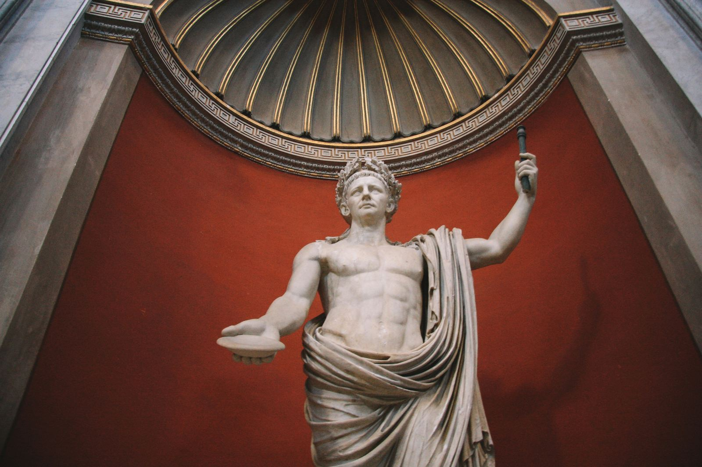

L'Impero Romano ha lasciato un'impronta indelebile nella cultura, lingua, leggi e tecnologia moderne.
L’Impero Romano, con oltre mille anni di storia, ha lasciato un segno indelebile che ancora oggi influenza la nostra cultura e tecnologia. In questo articolo, esploreremo come l’eredità romana continua a vivere nella nostra quotidianità.
La cultura romana ha avuto un impatto profondo su molti aspetti della vita moderna. La lingua latina, utilizzata nell'Impero, è la base di molte lingue attuali come l’italiano, il francese, lo spagnolo e il portoghese. Inoltre, i nostri sistemi legali moderni sono fortemente influenzati dal diritto romano.

Il latino ha lasciato un'eredità duratura nella lingua e nella letteratura. Molti termini scientifici, medici e legali provengono dal latino. Lingue moderne come l’italiano sono dirette discendenti di questa lingua antica.
Il diritto romano ha influenzato i principi fondamentali dei nostri sistemi legali, come la presunzione di innocenza e il diritto a un processo equo. La struttura dei sistemi legali attuali, con la divisione tra diritto pubblico e privato, deriva anch’essa dal diritto romano.
L'Impero Romano era noto per le sue innovazioni tecnologiche, molte delle quali sono ancora in uso oggi. I romani erano esperti nell’ingegneria civile, creando strade, ponti, acquedotti e edifici che sono durati fino ai giorni nostri. Hanno anche sviluppato tecniche avanzate di agricoltura e metallurgia.
I romani costruirono opere maestose come il Colosseo, ancora oggi uno dei monumenti più iconici del mondo. Le loro strade, progettate per il movimento efficiente delle truppe e delle merci, hanno gettato le basi per la moderna rete stradale.
I romani introdussero nuove colture e tecniche di coltivazione come la rotazione delle colture. Erano anche abili metallurgi, producendo armi e utensili di alta qualità.

L’eredità dell’Impero Romano è ancora visibile nella nostra cultura e tecnologia. Le loro innovazioni continuano a plasmare la nostra vita quotidiana, dalle lingue che parliamo alle leggi che seguiamo, fino alle strade su cui viaggiamo.
fonte: L’Eredità dell’Impero Romano: Influenza Culturale e Tecnologica
Parole Chiave
| Impero | Un grande gruppo di paesi controllati da un solo governo. |
| Storia | Racconto di quello che è successo nel passato. |
| Cultura | Le idee, le tradizioni e i comportamenti di un gruppo di persone. |
| Lingua | Il modo di parlare e scrivere di un gruppo di persone. |
| Legge | Regola fatta dal governo. |
| Tecnologico | Che riguarda la scienza e l'uso di strumenti avanzati. |
| Strada | Un percorso dove le persone camminano o guidano le macchine. |
| Ponte | Costruzione che permette di attraversare acqua o strade. |
| Edificio | Una costruzione come una casa o un palazzo. |
| Agricoltura | Il lavoro di coltivare piante e crescere animali per cibo. |
| Metallurgia | Lavorare con i metalli per fare oggetti. |
| Colosseo | Un grande anfiteatro a Roma, famoso e antico. |
| Influenza | L'effetto che qualcosa ha su altre cose. |
| Presente | Che c'è ora, adesso. |
| Moderno | Di questo tempo, non vecchio. |
| Lingua latina | La lingua parlata nell'Impero Romano. |
| Processo | Un procedimento legale per decidere se qualcuno è colpevole o no. |
| Diritto | L'insieme delle leggi. |
| Ingegneria | Il lavoro di progettare e costruire cose come strade e ponti. |
| Iconico | Molto famoso e rappresentativo. |
| Tecnica | Un modo specifico di fare qualcosa. |
| Coltivazione | Far crescere piante. |
| Qualità | Come è fatto qualcosa, se è buono o cattivo. |
| Quotidiano | Ogni giorno, tutti i giorni. |
| Conquista | Quando un paese prende il controllo di un altro paese. |
| Rete | Un insieme di strade, persone, o altre cose collegate. |
Esercizio
Domande
- Quali lingue moderne vengono dal latino?
- Come ha influenzato il diritto romano le nostre leggi?
- Quali costruzioni romane possiamo vedere ancora oggi?
- Cosa hanno fatto i romani per l'agricoltura?
- Perché il Colosseo è famoso?